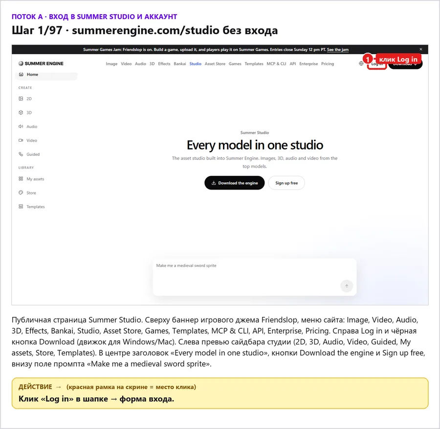

Шаг 1 / 97
summerengine.com/studio без входа
Публичная страница Summer Studio. Сверху баннер игрового джема Friendslop, меню сайта: Image, Video, Audio, 3D, Effects, Bankai, Studio, Asset Store, Games, Templates, MCP & CLI, API, Enterprise, Pricing. Справа Log in и чёрная кнопка Download (движок для Windows/Mac). Слева превью сайдбара студии (2D, 3D, Audio, Video, Guided, My assets, Store, Templates). В центре заголовок «Every model in one studio», кнопки Download the engine и Sign up free, внизу поле промпта «Make me a medieval sword sprite».
Действие
Клик «Log in» в шапке → форма входа.
- 1клик Log in